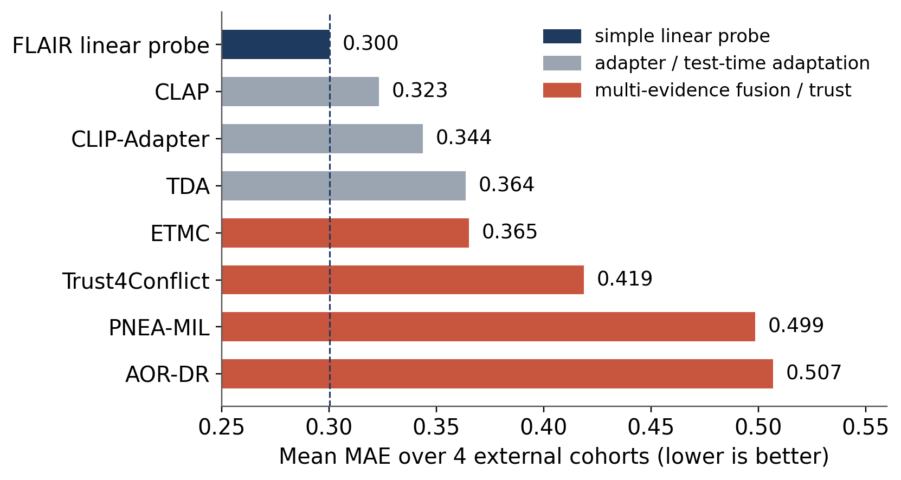
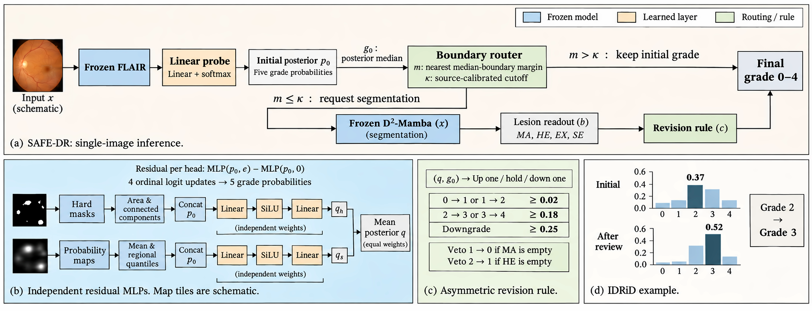
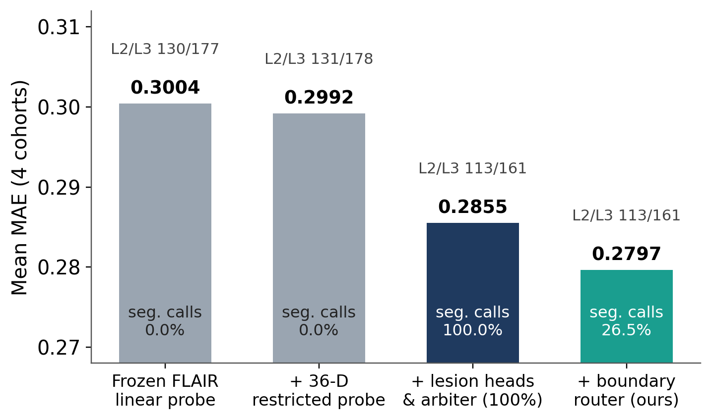
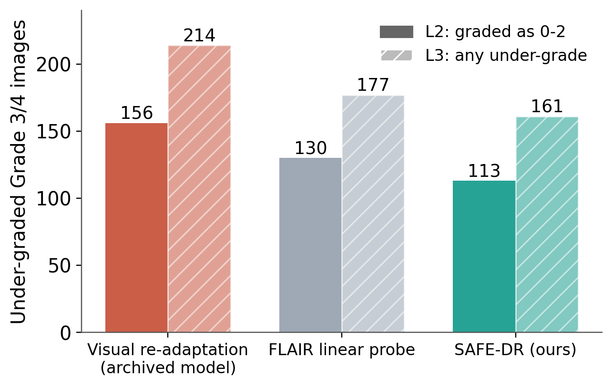

SAFE-DR
Selective Evidence Routing and Asymmetric Arbitration for Cross-Center DR Grading with Frozen Foundation Models
The five DR grades decide who needs care, and how urgently
Diabetic retinopathy is the leading preventable cause of blindness in older adults with diabetes. Early stages are symptom-free, so patients depend on regular fundus screening in community clinics, where each grade maps to a different care pathway.
Community follow-up
No or mild DR. Re-screen routinely; keeps scarce hospital ophthalmology slots free.
Refer and monitor
Moderate non-proliferative DR. Needs referral to ophthalmology for close monitoring.
Treat urgently
Severe NPDR or proliferative DR. Sight-threatening: needs prompt clinical intervention.
What a deployable grader must deliver
- Small grade error: MAE = mean |predicted − true grade|, so missing by four grades costs more than missing by one.
- No severe under-grading: L2 counts true Grade 3/4 graded 0–2; L3 counts any under-grade of a Grade 3/4 eye.
- Low compute: frozen backbones, no per-site re-training, and no expensive tools on images that do not need them.
Why current models do not deploy
- Blanket tool calls: segmenting every image wastes compute, and cross-site segmentation noise overturns correct first reads.
- Visual re-adaptation: re-tuning image features biases external grades downward (L2/L3 ).
- Symmetric trust: a lesion the tool misses is read as “no lesion”, so true patients are down-graded.

One fundus photo through SAFE-DR
Four real cached external cases: a confident healthy eye (fast path), a borderline eye upgraded to severe, a downgrade blocked by an empty haemorrhage mask, and a failure case where the router does not call the expert.
Two frozen backbones, fewer than 800 trainable parameters
SAFE-DR follows an ophthalmologist's routine. It forms a first opinion, consults a specialist tool only when that opinion is uncertain, and changes its mind only on positive evidence.

Restricted anchor
Frozen FLAIR features are projected onto a source-locked 36-D subspace (32 PCA + 4 class directions) and read by a linear probe. The lesion stage never edits visual features.
Boundary router
Margin m is the distance from p₀'s cumulative probability to 0.5 at the nearest legal grade boundary. Only images with m ≤ κ = 0.219 (source 30th percentile) are segmented.
Dual-granularity heads
A mask head reads 21 statistics of clear lesion masks; a probability-map head reads 28 statistics of faint, below-threshold lesion signals. They are trained independently (33→8→4, 304 params each) and their outputs are averaged.
Asymmetric arbiter
Move at most one grade, and only if the expected-MAE gain passes a threshold (0.02 / 0.18 up, 0.25 down). An empty MA or haemorrhage mask blocks a downgrade.
Lowest MAE on every external cohort
5,612 images from MMRDR (held-out source fold), DeepDRiD, EyePACS and IDRiD. Per-cohort MAE; mean, accuracy and QWK are equal-weight cohort averages; L2/L3 are counts over 514 severe images. Best value per column is highlighted.


Not best everywhere: CLAP has slightly higher macro sensitivity, and TDA has a lower L3 rate. Baselines are our frozen-input adaptations of the authors' code.
Run SAFE-DR in your browser
This page contains the archived probe and head weights plus 199 cached external rows. Pick a case: the JavaScript port of b30.py recomputes p₀, the route, both lesion heads and the arbiter's decision. It then checks the result against the Python reference.
1 · Initial posterior p₀ (frozen FLAIR → 36-D probe)
2 · Boundary router
3 · Lesion heads (mask head ‖ probability-map head → averaged)
4 · Asymmetric arbiter → final grade
Failure case and limitations
Confident but wrong
EyePACS #231 is a reference Grade 1. FLAIR gives Grade 0 with probability 0.917 (margin 0.417 > κ), so the router never calls D²-Mamba. Forcing segmentation would have produced Grade 1. Routing trades a few such misses for efficiency.
What we did not show
Retrospective historical cohorts with published grades. EyePACS overlaps FLAIR pre-training. Patient-level linkage is only partly verified. The 73.5% saving counts tool calls; end-to-end GPU latency was not measured. There is no prospective clinical validation.
Towards deployment
Calibrate κ per site with unlabelled images, measure latency on low-cost clinic hardware, and run a prospective community-screening pilot with ophthalmologist review.
Every number on this page is regenerated by code
Run
pip install -r requirements.txtpython -m unittest -q test_b30python evaluate.py
CPU only, NumPy only. The code rebuilds initial posteriors from cached 36-D coordinates (max deviation 5e−12 from the archive), recomputes both heads, and checks routed and request-all grades image by image. Expected output: MAE 0.2797, accuracy 75.96%, QWK 0.8626, L2/L3 113/161, 1,489 requests.
Team and disclosure
- XIA Wangding: clinical framing and evaluation protocol
- Wang Xilin: baselines and failure analysis
- Wang Guangzhen: method and architecture
- Tian Li: demo website and video
- Yang Haohan: results, ablations and report
Frozen models: FLAIR (Silva-Rodríguez et al., MedIA 2025) and D²-Mamba (Yu et al., 2026). AI assistance was used for code packaging, documentation and presentation materials.